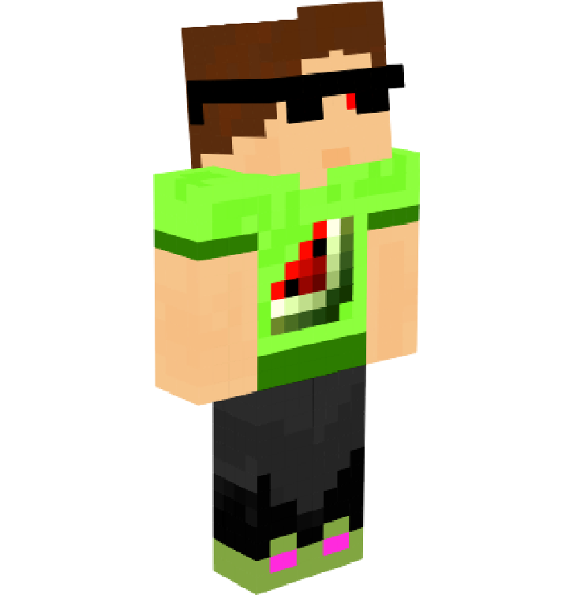
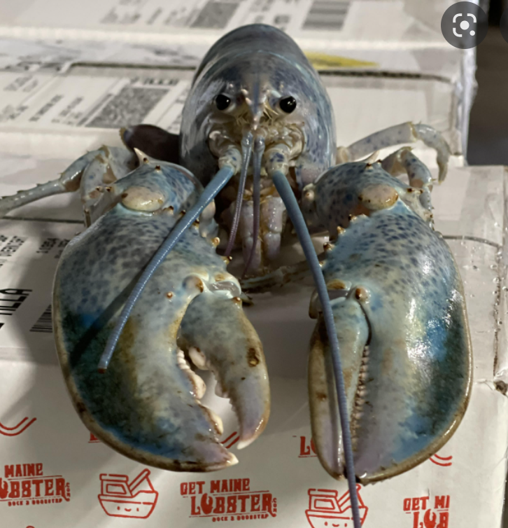

MelonCraft80 is the owner and main referee of WynnCraft FightClub. All rules go through him
and he is the leader of the WynnCraft PVP Community.
It is said that he is the product of a USSR Science project and is the 80th variation
of a Watermelon-Human hybrid. Is certified to count down for matches. Find his info at twitch.tv/meloncraft80
imMole_ is one of the secondary WCFC referees. imMole_ has been extremely instrumental in designing
rulesets for WCFC and many of the rules in the season 2 rulebook are attributed to imMole_'s suggestions.
Additionally, no one has ever heard imMole_'s voice. Is certified to count down for matches.

A builder on the WynnCraft Network's build team, Deusphage is the final WCFC referee. She is the resident boat
enthusiast, and the leader of the WynnCraft Boat Community. Deusphage was instrumental in building the arena as well as
refereeing the matches. Is certified to count down for matches.